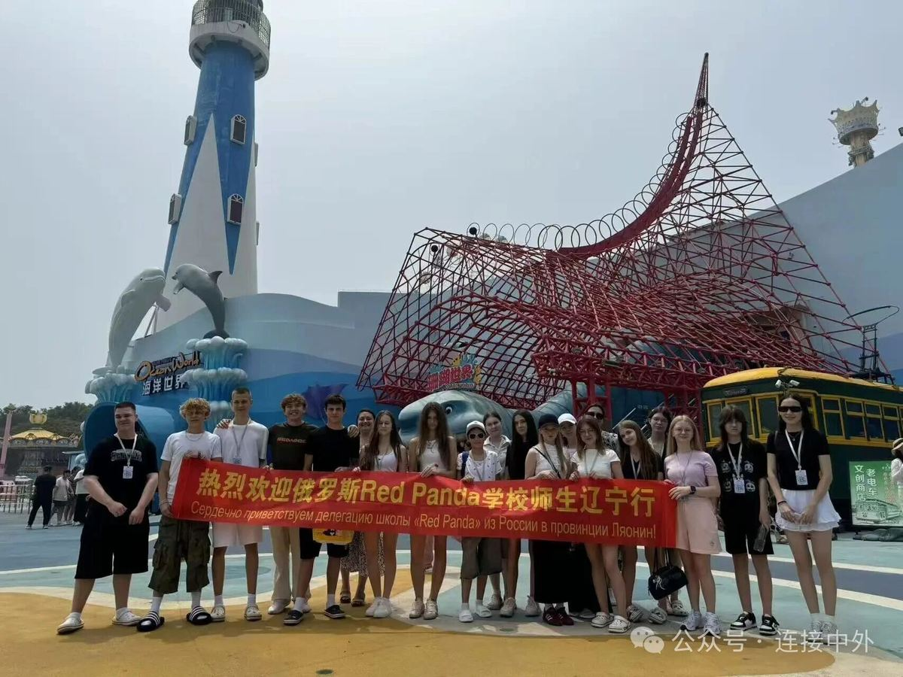
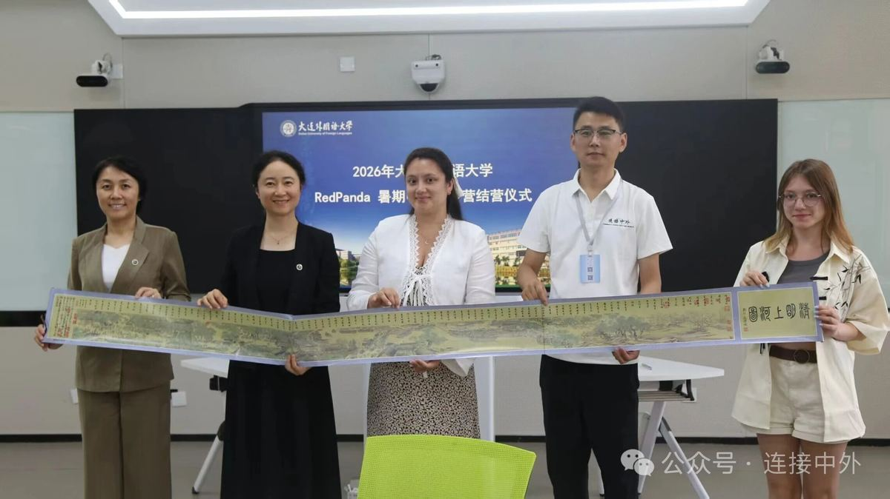
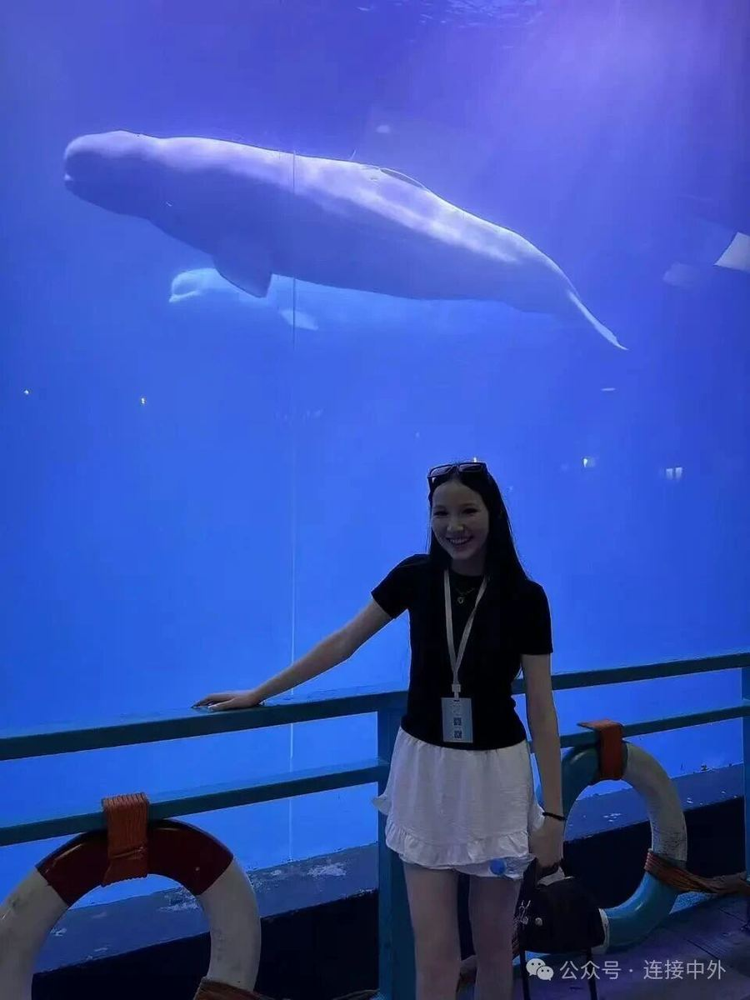

Inicio/Verano en China
Verano 2027 · Beijing y Dalian
Verano en China
中 国 游 学
Catorce días de clases de chino y cultura en China, con todo organizado desde la llegada hasta la salida. Grupos de jóvenes y de adultos por separado.
- 14 días
- Jóvenes 14–17 · Adultos 18+
- 1.690 € por persona

Qué incluye el programa
Clases en la universidad
20–25 horas lectivas en la Universidad Médica de Dalian, con profesorado de chino para extranjeros. Clases de 10–15 personas por nivel HSK y certificado final.
Cultura con las manos
Caligrafía, papel recortado, taichí, una introducción a la medicina tradicional china y hacer jiaozi.
Vivir en el campus
Habitaciones dobles con baño en la residencia universitaria, comidas tipo bufé con menú bilingüe, seguridad 24 horas y centro médico en el campus.
Grupos cuidados
1 guía por cada 10 participantes y un monitor/a de convivencia en cada grupo. Jóvenes y adultos viajan por separado.
El viaje, día a día
Itinerario orientativo: se adapta a las fechas y al grupo. Jóvenes: un día en un colegio chino con alumnado local. Adultos: más tiempo libre, compras y visitas culturales en Dalian.
- Día 1
Beijing
Llegada y cena de bienvenida · paseo por Shichahai o Wangfujing
- Días 2–3
Beijing
Ciudad Prohibida · Tiananmén de noche, con pato laqueado · Nido de Pájaro y Cubo de Agua · Templo del Cielo · Palacio de Verano
- Días 4–5
Beijing
Museo Aeroespacial · observación de estrellas en el Observatorio Nacional (según fechas) · Gran Muralla de Mutianyu, con teleférico
- Día 6
Hacia Dalian
Templo del Lama · tren de alta velocidad a Dalian · paseo nocturno junto al mar · llegada a la universidad
- Días 7–11
Dalian
Clases de chino en la Universidad Médica de Dalian (20–25 h) · clase práctica en un museo · talleres de cultura · cena de clausura y certificado
- Días 12–13
Dalian
Un día en un colegio chino o escuela de artes marciales · casa de los pandas · acuario Sun Asia Ocean World
- Día 14
Regreso
Visita a la televisión de Dalian o al Museo de Ciencia · vuelo de regreso
Fechas y precio
| Grupo | Fechas en China |
|---|---|
| A | 5–18 de julio de 2027 |
| B | 19 de julio – 1 de agosto de 2027 |
| C | 2–15 de agosto de 2027 |
| D | 9–22 de agosto de 2027 |
Dos versiones: Jóvenes (14–17 años) y Adultos (18+). Inscripciones a partir de enero de 2027. Mínimo 20 personas por grupo.
Verano en China
por persona
Incluye, desde la llegada a China: alojamiento (hotel 4–5★ y hotel universitario), pensión completa, transporte interno, entradas, clases y material, seguro y actividades culturales.
No incluye: vuelo internacional (hay vuelos directos España–Beijing), las clases de chino opcionales antes del viaje ni gastos personales.
Seguridad y garantías
Agencia de viajes con licencia
El viaje en China se contrata con Dalian Shenghongfeng International Travel Agency, licencia L-LN020098, agencia asociada de Connect China.
Seguro incluido
Seguro de responsabilidad civil de la agencia de 4 millones de RMB y seguro de accidentes de 500.000 RMB por participante.
Siempre con el grupo
Un guía por cada 10 participantes y un monitor/a que acompaña al grupo día y noche.
Menores de edad
Los menores viajan solo con autorización escrita de sus padres o tutores, en grupos separados de los adultos.
Quién lo organiza
La universidad
Las clases se imparten en la Universidad Médica de Dalian (fundada en 1947), en su campus de Lüshun, entre montaña y mar.
Nuestro socio en China
Todo lo que ocurre en China lo organiza Connect China (Connect Liaoning International Cultural Exchange Co., Ltd.), con sede en Dalian, que organiza programas de chino y cultura para estudiantes y centros extranjeros. Los viajes se contratan con su agencia de viajes con licencia.
Faro de Oriente
Representamos a Connect China en España para este programa: información, inscripción, reuniones con las familias y preparación antes del viaje.
Ya lo hemos hecho
Red Panda · 2026
En julio de 2026, jóvenes de la escuela rusa de chino Red Panda pasaron dos semanas en Dalian y Shenyang: clases en la Universidad de Lenguas Extranjeras de Dalian, preparación HSK, visitas culturales y una ceremonia de clausura bilingüe con certificado oficial. Varios contaron en la clausura que por fin habían perdido el miedo a hablar chino.
Universidad Médica de Dalian · 2025
En 2025, un grupo de 15 jóvenes rusos pasó dos semanas de chino y cultura en la Universidad Médica de Dalian. Más del 95 % aprobó los exámenes oficiales HSK 1–3.




Fotos: campamento de verano Red Panda, Universidad de Lenguas Extranjeras de Dalian, julio de 2026 (Connect China).
De la inscripción a la salida
Enero
Abren las inscripciones. La plaza se confirma con una señal.
Primavera
Confirmamos grupo, fechas y vuelos con cada familia.
Junio
Reunión con las familias antes de salir. Clases de chino opcionales para prepararse (no incluidas en el precio).
Julio–agosto
Catorce días en China. Fotos cada día en el grupo de WhatsApp de las familias.
De vuelta
Certificado de la universidad y, si quieres, el examen HSK.
Preguntas sobre el viaje
¿Necesito visado?
¿Están incluidos los vuelos?
¿Hay que hablar chino?
¿Quién cuida de los jóvenes?
¿Y si no se completa el grupo?
¿Hay clases de chino antes del viaje?
¿Cómo se mantiene el contacto con las familias?
¿Cuándo y cómo me inscribo?
¿Quieres plaza para el verano de 2027?
Apúntate ya a la lista; te enviamos los detalles en cuanto se abran las inscripciones.